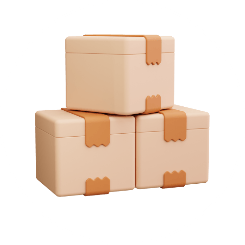
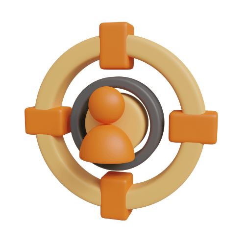
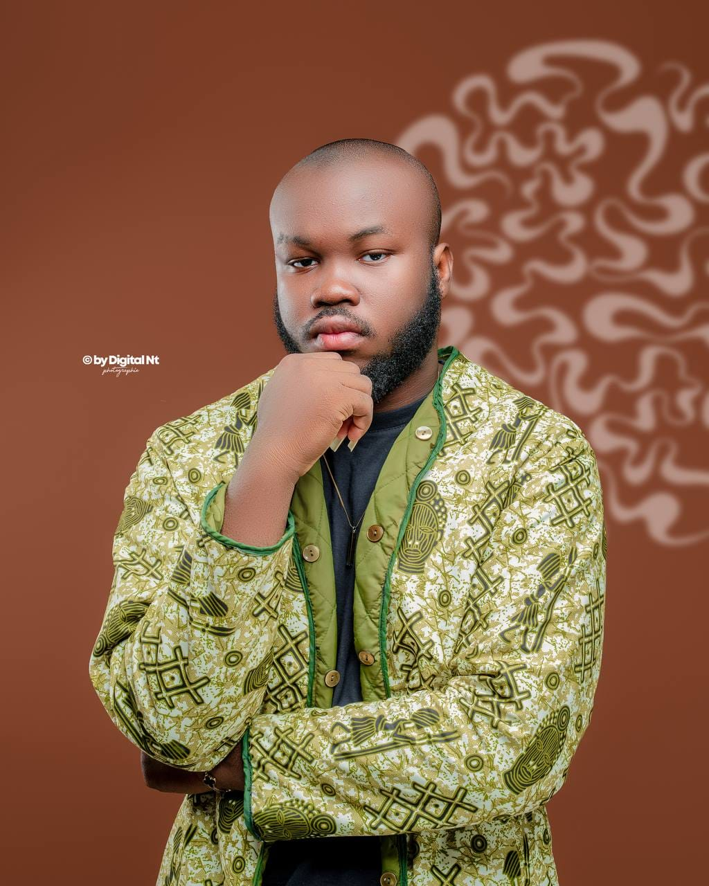

Axe 1Construire une offre claire qui se vend
Comment transformer ta compétence en un service que les clients comprennent et achètent, même si tu débutes.
Masterclass gratuite · Samedi 5 septembre · 20h00 GMT+1
Octobre, novembre, décembre : c'est le trimestre où les budgets se débloquent et où les entreprises signent. Le samedi 5 septembre, je te montre comment en profiter — que tu débutes ou que tu sois déjà freelance.
Places limitées · Aucune carte bancaire · Accès immédiat
Début de la masterclass dans
La masterclass a commencé — rejoins le groupe pour le replay
Pour rattraper ton année
L'objectif qu'on vise
Ce que ça te coûte
Chaque mois sans méthode, tu perds de l'argent sans même le voir :
Additionne ça sur les 4 mois qui restent. C'est ce que cette année va te coûter si rien ne change.
Entre octobre et décembre, les entreprises dépensent les budgets qu'elles n'ont pas consommés, lancent les projets qu'elles veulent livrer avant janvier, et préparent l'année suivante.
Pendant ce temps, la majorité des freelances lèvent le pied et attendent la nouvelle année.
C'est exactement là que se joue l'écart entre ceux qui finissent l'année avec des clients, et ceux qui recommencent à zéro en janvier.

Axe 1Comment transformer ta compétence en un service que les clients comprennent et achètent, même si tu débutes.

Axe 2Les leviers concrets pour que tes services remontent dans les résultats de recherche sur ComeUp et que ton profil LinkedIn attire les bons clients.
La méthode d'approche qui fonctionne quand on part de zéro, sans réseau et sans un franc à investir.
Comment sortir de la guerre des prix et facturer ce que ton travail vaut réellement.
Samedi 5 septembre · 20h00 GMT+1 · En ligne

Je m'appelle Déodat CAPO-CHICHI. Je suis freelance en conception 3D depuis 10 ans, et j'accompagne aujourd'hui des freelances francophones à vendre leurs compétences sur ComeUp et LinkedIn.
Les méthodes que je vais partager le 5 septembre, ce ne sont pas des théories lues quelque part : ce sont celles que j'utilise moi-même, et celles que j'ai transmises aux personnes dont tu vas voir les retours juste en dessous.
Touche une capture pour l'agrandir.
Gratuit · Aucune carte bancaire · Accès immédiat
Je ne vais pas te vendre une formule magique. Personne ne peut te garantir des clients si tu n'appliques rien.
Ce que je te garantis, c'est une méthode testée, celle qui a produit les résultats que tu vois plus haut. Le reste dépend de ce que tu en fais.
La masterclass est gratuite. Tu n'as rien à perdre à venir voir.
Oui, entièrement. Aucune carte bancaire, aucun engagement.
Oui. La masterclass est construite pour que quelqu'un qui part de zéro puisse suivre, et pour qu'un freelance déjà actif reparte avec des leviers concrets.
La deuxième partie est spécifiquement pensée pour ceux qui vendent déjà mais qui plafonnent : positionnement, tarification, régularité des commandes.
Inscris-toi quand même : le replay est envoyé aux membres du groupe.
Le lien de connexion est envoyé dans le groupe avant le début.
Tu peux continuer exactement comme les 8 derniers mois, et arriver en janvier avec les mêmes problèmes.
Ou tu peux consacrer une soirée, le 5 septembre, à comprendre ce qui bloque réellement — et attaquer le dernier trimestre avec un plan.
Le choix t'appartient. Mais il se fait maintenant, pas en décembre.
Places limitées · Tu peux quitter le groupe quand tu veux